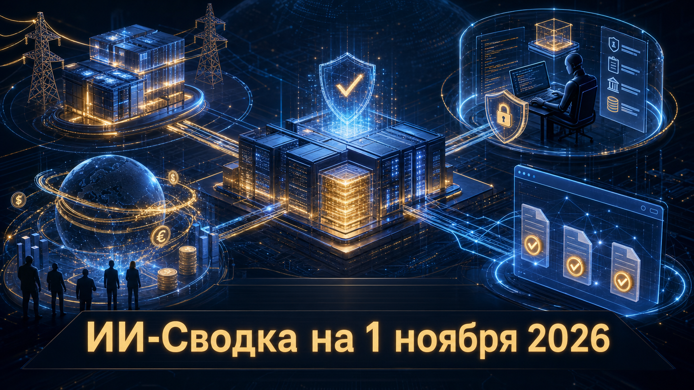

Новостей сегодня меньше, чем обычно
Конец октября принёс важные сигналы не столько о новых моделях, сколько о финансовой и управленческой основе ИИ-рынка. NVIDIA обсуждает более прямое участие в финансировании вычислительной площадки для Anthropic, OpenAI уточняет параметры привлечения капитала и работу с правами сайтов, а Claude Code добавляет новые корпоративные контуры контроля.
Общий вывод для компаний: масштабирование ИИ всё сильнее зависит от структуры финансирования дата-центров, управляемости агентных инструментов и правил доступа к данным, а не только от качества базовой модели.
Anthropic выпустила Claude Code 2.1.316. В обновлении появились pooled group budgets для Claude apps gateway, режим layered для одновременного применения нескольких управляемых политик и настройка уровня усилия субагентов через переменную CLAUDE_CODE_SUBAGENT_EFFORT. Подробности перечислены в официальном описании релиза Claude Code.
Для организаций наиболее заметно сочетание бюджетов и политик: администратор может задавать общие лимиты расходов для групп, а правила доступа больше не обязаны сводиться к одной совпавшей политике. Также добавлен input tagging для Amazon Bedrock Guardrails, необходимый для фильтрации prompt-инъекций. Это инкрементальный релиз, но он показывает, что корпоративные агенты всё плотнее обрастают FinOps- и security-контролями.
NVIDIA ведёт переговоры о возможной гарантии долгового финансирования для кампуса Nscale в Западной Вирджинии, который должен обслуживать Anthropic. Как сообщает TechCrunch, обсуждается механизм residual-value guarantee: в случае проблем Nscale NVIDIA могла бы временно принять объект и искать нового покупателя или арендатора.
Речь пока идёт о переговорах, а не о подписанной сделке; объём гарантии и окончательные условия публично не подтверждены. Однако сам формат важен: поставщик ускорителей может принимать на себя часть финансового риска инфраструктуры, обеспечивающей спрос на его оборудование. Для рынка neocloud это сигнал, что обычного венчурного и долгового капитала для гигантских ИИ-строек может быть недостаточно без участия ключевых технологических контрагентов.
Financial Times сообщила, что OpenAI снизила целевой объём нового финансирования с ранее обсуждавшихся 30 млрд до 20 млрд долларов. Wall Street Journal, на которую также ссылается TechCrunch, пишет примерно о 11 млрд долларов обязательств и оценке около 1,25 трлн долларов.
OpenAI на момент публикаций не подтвердила параметры публично, поэтому суммы, оценку и статус обязательств следует считать сообщениями источников, а не окончательными условиями закрытого раунда. Тем не менее корректировка цели указывает на более осторожный рынок частного капитала: даже для крупнейших ИИ-лабораторий масштабные планы по вычислениям теперь требуют особенно сложной комбинации инвестиций, кредитов и партнёрского финансирования.
OpenAI опубликовала материал Making it easier for websites to express AI training preferences, посвящённый тому, как владельцы сайтов могут обозначать свои предпочтения относительно использования их материалов для обучения ИИ. Это официальный продуктово-политический анонс компании, а не независимая оценка его практической применимости.
Тема важна на фоне роста конфликтов вокруг обучающих данных и прав издателей. Стандартизированные, технически читаемые сигналы могут сделать правила для crawler-ов и сборщиков данных понятнее, но сами по себе не снимают ключевых вопросов: как именно такие предпочтения будут интерпретироваться, распространятся ли они на уже собранный контент и насколько единообразно их будут соблюдать разные разработчики моделей.